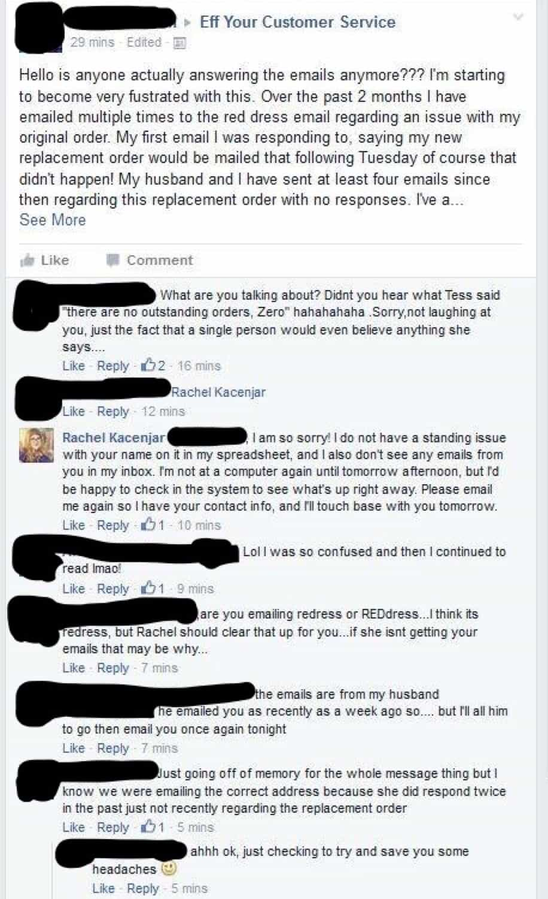
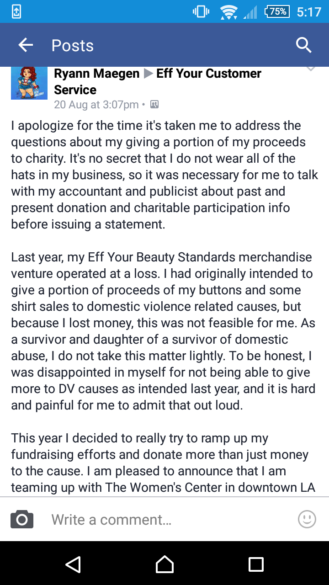
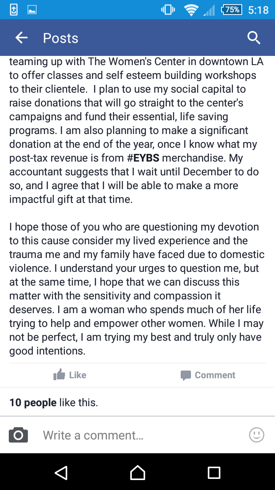

< < < Back
Is Obese “Model” Tess Holliday Stealing Money From Domestic Violence Charities? – Return Of Kings
Some months ago, Return of Kings brought you the story of delusional and morbidly obese “model” Tess Munster, now married as Tess Holliday. She claims to teach women “body positivity,” despite distorting her real face with countless layers of make-up, using Photoshop, and suffering from a host of debilitating, weight-related conditions, including gallstones. Now literally hundreds of people are accusing her of criminal fraud.
Some time ago, Holliday, whose real name is Ryann Maegen Hoven (so many names, so many red flags), began selling T-shirts. These were priced at a rather ludicrous $40 (or something similar, depending on the item) and she promised to donate a portion of the proceeds to domestic violence charities. Unfortunately, many are claiming they were charged an exorbitant fee for shipping as well.
Tess and those working with her have previously used bizarre excuses like not receiving email correspondence from those who allege they are owed products already paid for, such as in this exchange:

Holliday initially said there were no outstanding orders left to shipped, just as more people were coming forward and asserting they were duped.
People offered refunds continue to say they have “bounced,” indicating Tess Holliday is probably facing financial problems she has not disclosed to her “customers”:
Whatever your opinion of domestic violence “charities,” we are still dealing with alleged mass fraud
I share the incredulity of many of you reading this. Was the money promised to these organisations really of a charitable nature, considering the myths spread by feminist-led domestic violence campaigns?
That said, we must suspend such judgments and focus on the warranties Tess Holliday made to try and induce people to buy her products so she made a tidy profit. Whatever your opinion of her supporters, they are entitled to see their money go to where it was promised, plus obviously receive the items they paid for!
What makes this story even more sinister-looking is that Tess Holliday, after months of leaving people in the lurch regarding emails they had written her, finally admitted (using her non-professional modeling name) that none of the promised funds would be going to domestic violence charities:


Is Tess Holliday the new Belle Gibson?
Cancer and charity fraudster Belle Gibson.
Return of Kings correctly suggested cancer-faker Belle Gibson, who swindled hundreds of thousands of dollars “earmarked” for charity, was a fraud. Evidence is mounting that Tess Holliday may be of the same moral hue.
Again, we are accosted by an example of a feminist darling being outed for her alleged misdeeds. Unsurprisingly, the zeal with which this “role model” was celebrated for her body image crusade has not been replicated when it comes to the mainstream media investigating her for months (maybe even years) of potential financial impropriety. What gives?
Women activists only need to employ the typical boilerplate of “inspiration,” “self-confidence,” and “female empowerment” to successfully make others, overwhelmingly fellow females, part with their hard-earned currency for dubious or downright plain dishonorable ventures. And this is evidently exacerbated by the lack of interest from media outlets in presenting possible narrative problems as they develop. A journalist interested in probity could have nipped this Tess Holliday issue in the bud months ago. After all, alleged victims have been seeking justice for a long time.
The Dirty pointed out in June of this year, when more and more purchasers were becoming agitated, that Holliday was afforded the publicity of a People Magazine cover shoot and laudatory coverage by The Daily Mail and Huffington Post. Zero comparable articles have emanated from these same kinds of publications about her alleged charity and sales fraud. So much for fair and balanced reportage!

Just be careful, Mike. Taking Tess Holliday down may triple the effects of the 1994 Los Angeles earthquake.
It is becoming more and more apparent that the pasts and whole picture of feminist darlings like Tess Holliday are woefully untouched by those who have a responsibility to deal in facts, not feel-good (and unhealthy) hype. Whether she is of the same calibre of the confirmed charity fraud Belle Gibson remains to be seen, but the indications are not looking good. These worrying examples of unquestioned female “role models” only add themselves to a preexisting pack of wrongly celebrated feminists, including compulsive liar Emma Sulkowicz.
After so many instances of dishonesty and narcissistic self-aggrandizement, it’s time for a radical change in how we appraise so-called heroines.
Read More: Obese Size 24 Woman Shows That Any Woman Can Be A Model